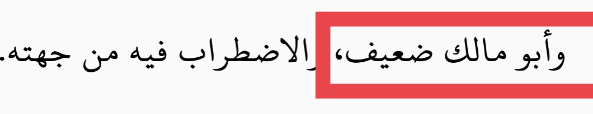
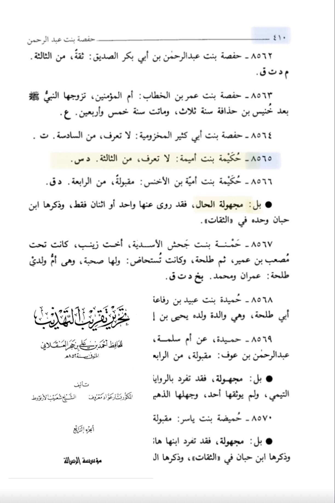

That hadith is narrated with 2 isnads
The first one contains someone called ابو للملك is he da’if (weak narrator) ?
Translation: “And Abu Malik is da’if (weak narrator)”
-Source: The book Of Ilal al-Daraqutni (RH) volume 15 page number 415 end of narration 4106

The other one contains حكيمة بنت اميمة is she known ?
Translation: “Hakima bint umayma is Unkown (majhool) from the 3 named by that name”
-Source: Tahrir Takrib al-Tahzib volume 4 page number 410 person number 8565 by name “Hakima bint umayma”
